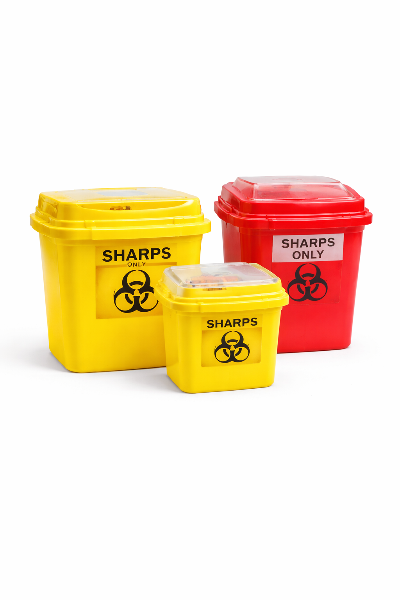

Quality Medical Waste Products
Our range of high-quality medical waste products is designed to meet the needs of healthcare facilities. From containers and bags to sharps disposal units, we offer durable and compliant solutions for safe waste management.

Sharp Safety Boxes
Safe, durable containers for discarded needles and sharps.

Color-Coded Waste Bags
Easily segregate healthcare waste to stay compliant.

Pharmaceutical Waste Containers
Secure disposal for expired or unused medicines.

Chemical Waste Kits
Specialized packaging for hazardous chemical waste.

Other Regulated Waste Tools
Professional solutions for other hazardous medical waste.